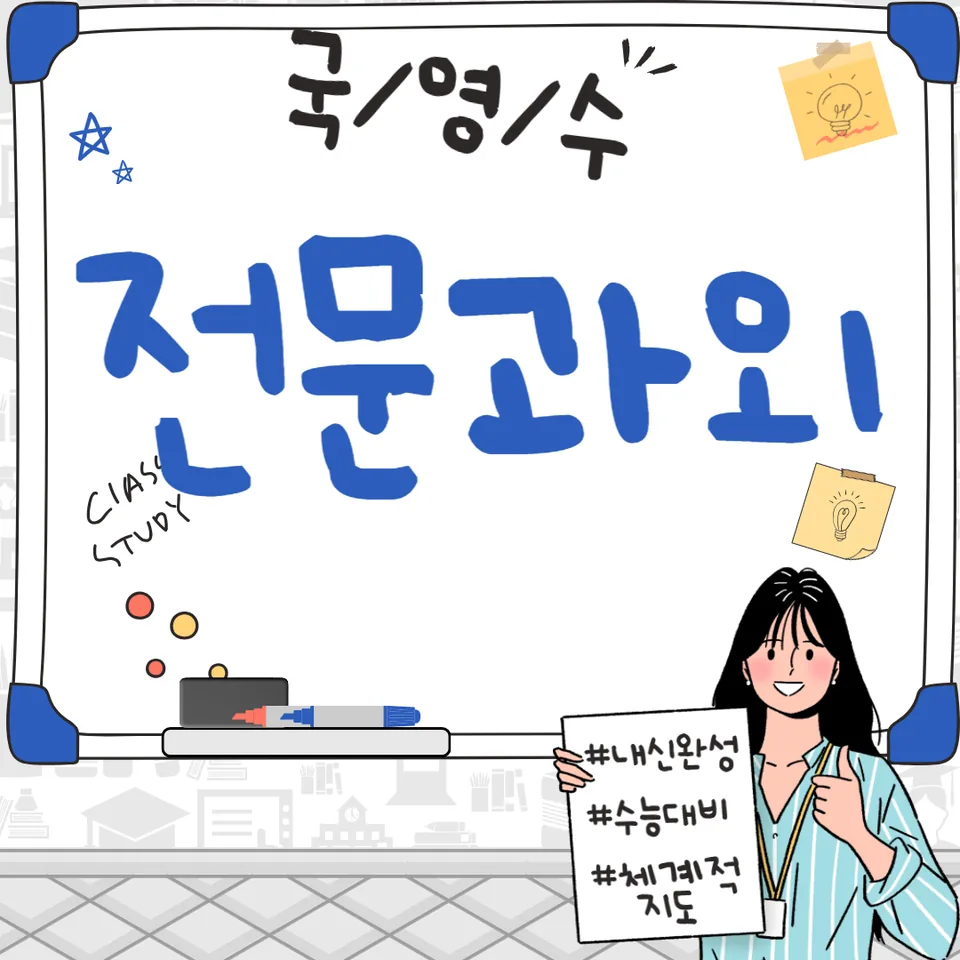

PageType : SUBJECT
URL : /경기도과외/부천시과외/원미구과외/소사동과외/소사동수학과외/
지역 교육환경이 수학 학습에 미치는 영향
소사동수학과외를 찾는 학생들은 같은 학년이라도 학교 밖 학습 분위기가 다르다는 점을 먼저 느낍니다. 수업 속도는 교실마다 비슷해 보여도, 과제의 양과 확인 방식이 달라지면 개념 정착 시점이 뒤로 밀리기 쉽습니다. 특히 소사동수학과외 환경에서는 학습 루틴을 먼저 점검해 두려는 흐름이 강해, “지금 이해가 됐는지”를 매주 확인하는 방식이 자주 활용됩니다.
지역 학교의 수업은 대체로 진도 중심으로 흘러가지만, 학생들은 그 진도 안에서 개념 간 연결을 스스로 완성해야 합니다. 소사동수학과외에서는 교실에서 지나치기 쉬운 부분을 학습 기록으로 남겨, 학생이 스스로 막히는 구간을 찾아내게 합니다. 이때 성적만 보는 관점보다 학습 태도의 변화가 먼저 관찰되며, 공부습관이 생기기 시작하면 같은 단원이라도 이해 격차가 줄어듭니다.
학교별 평가 방식과 학습 방향
학교별 내신에서 강조하는 요소가 달라지면 수학 공부의 초점도 달라집니다. 서술형과 과정 점검이 큰 학교에서는 풀이 흐름을 설명하는 힘이 필요하고, 선다 위주 비중이 높은 학교에서는 시간 배분과 문제 유형 적응이 더 중요해집니다. 소사동수학과외에서는 이러한 차이를 고려해, 학생이 어떤 방식으로 점수를 만드는지부터 정리합니다.
수행평가가 포함된 시기에는 수학 학습이 시험 준비와 분리되어 보이기도 합니다. 그러나 실제로는 개념을 적용하는 과정에서 수행평가가 연결됩니다. 학생은 발표나 기록에서 표현을 요구받을 때, 수학 개념을 “아는 것”에서 “사용하는 것”으로 전환하는 경험을 하며, 소사동수학과외의 학습 관리가 그 전환을 늦지 않게 돕습니다.
학생들이 수학을 어려워하는 주요 원인
학생들이 수학에서 막히는 순간은 대개 한 번에 크게 나타나지 않습니다. 작은 실수, 계산 실수, 용어 이해 부족이 누적되면 어느 날 갑자기 전체 단원이 흐려 보이기 시작합니다. 소사동수학과외에서는 그 원인을 문제 스타일이 아니라 학습 흐름으로 되짚습니다.
학습 초반에는 “풀리는 것 같았다”는 감각이 오래가지만, 시간이 지나면 개념을 활용해야 하는 구간에서 불안이 커집니다. 이때 오답은 단순히 틀린 번호가 아니라, 학생이 어디에서 사고를 멈췄는지를 보여주는 지도처럼 다뤄집니다. 소사동수학과외에서는 오답 분석을 통해 실수의 유형을 묶고, 같은 실수가 다시 나오지 않게 복습의 우선순위를 바꿉니다.
학년 변화에 따른 수학 학습의 차이
중등에서 고등으로 갈수록 수학은 단순 연습이 아니라 사고를 요구하는 비중이 커집니다. 특히 학년이 올라갈수록 학습 부담은 “양”뿐 아니라 “이해해야 하는 깊이”에서 함께 늘어납니다. 소사동수학과외에서는 상급 학년에서 요구되는 학습 방식이 바뀌는 시점을 놓치지 않도록, 기초 개념의 연결 상태를 재점검합니다.
초반에는 개념을 설명하는 활동이 효과적으로 작동하지만, 학년이 높아질수록 그 설명이 문제 해결로 이어져야 합니다. 학생이 문제를 풀다가 멈추면, 대개 단원 지식이 부족하다기보다 문제를 바라보는 관점이 흔들리는 경우가 많습니다. 소사동수학과외는 이런 관점의 흔들림을 줄이기 위해 학습 계획의 단위를 더 작게 쪼개고, 공부습관을 촘촘히 유지하게 합니다.
꾸준한 학습이 실력으로 이어지는 과정
수학은 하루의 집중보다 반복의 누적이 결과를 좌우합니다. 시험이 다가오면 공부량이 늘어나는 건 자연스럽지만, 소사동수학과외에서 강조하는 지점은 “증가가 아니라 지속”입니다. 꾸준한 학습은 개념을 기억하게 만드는 힘이면서도, 다음 단원으로 넘어갈 때 연결을 빠르게 복원해 주는 역할을 합니다.
복습이 자리 잡히면 학생은 같은 문제를 다시 풀더라도 속도가 달라지고, 틀리는 이유가 줄어드는 것을 체감합니다. 소사동수학과외에서는 복습을 단순 재풀이로 두지 않고, 학습 기록을 기준으로 필요한 부분만 골라 다시 다루게 합니다. 그 과정에서 자기주도학습이 점차 형성되고, 학생은 “다음에 무엇을 해야 하는지”를 스스로 결정할 수 있게 됩니다.
문제 해결력을 키우는 학습 습관
문제 해결은 정답을 맞히는 기술이 아니라, 문제를 읽고 판단하는 과정이 누적될 때 성장합니다. 소사동수학과외를 통해 학습 습관이 잡힌 학생들은 문제를 처음 보면 곧장 계산을 시작하기보다, 조건과 요구를 정리한 뒤 어떤 사고가 필요한지 먼저 점검합니다. 이 습관이 생기면 같은 유형에서도 접근이 달라져 사고력의 폭이 넓어집니다.
시간을 효율적으로 쓰는 방법도 습관으로 만들어집니다. 시험 전에는 모든 문제를 끝까지 붙잡는 방식이 오히려 손해가 되기도 하고, 특정 유형에서 시간을 줄이는 판단이 필요합니다. 소사동수학과외에서는 시험 기간의 학습 패턴이 바뀌는 시점을 미리 다루어, 계획적인 공부습관이 흔들리지 않게 조정합니다.
복습과 학습 관리가 중요한 이유
복습은 “지나간 내용을 다시 보는 시간”이 아니라, 학습 관리의 핵심입니다. 시험이 가까워지면 학생들은 새 문제를 더 많이 풀고 싶어 하지만, 그 순간에 복습이 끊기면 오답이 다시 반복됩니다. 소사동수학과외는 학습 관리 관점에서, 어떤 부분이 약해졌는지 확인한 뒤 복습의 무게중심을 옮깁니다.
학부모가 자주 느끼는 고민도 여기에서 시작됩니다. “분명 공부했는데 왜 결과가 그대로일까”라는 질문은 보통 복습 방식과 연결되어 있습니다. 학생이 스스로 정리한 오답이 반복 훈련으로 이어지지 않으면, 문제 해결 과정이 남지 않습니다. 그래서 소사동수학과외에서는 오답을 분석하고 반복의 횟수를 늘리기보다, 복습의 질을 바꾸는 방향을 함께 설계합니다.
수학 학습에서 확인해야 할 핵심 요소
소사동수학과외에서 학습을 점검할 때는 개념의 이해, 내신과 시험 범위, 그리고 문제 해결 과정이 동시에 움직이는지 확인합니다. 학생이 공부하는 시간은 비슷해도, 어디에 집중하느냐에 따라 성장이 달라지기 때문입니다. 또한 학교에서 평가하는 방식에 맞게 서술의 밀도나 과정의 정리 수준이 달라져야 하므로, 학습 흐름을 관리하는 기준을 명확히 잡는 것이 중요합니다.
- 학교 수업과 시험 범위에 맞는 학습 계획을 세우고 있는지 확인합니다.
- 개념을 암기하는 데 그치지 않고 문제 해결 과정에 활용하고 있는지 점검합니다.
- 틀린 문제를 다시 풀어보며 실수의 원인을 꾸준히 분석합니다.
- 단기 성과보다 지속적인 복습과 학습 습관을 유지하고 있는지 살펴봅니다.
이 핵심 요소들이 맞물리면 학생은 사고력이 커지는 경험을 하게 되고, 문제 해결의 자신감이 천천히 형성됩니다. 소사동수학과외는 그 과정을 기록과 루틴으로 만들며, 학교와 가정에서 이어지는 학습 환경이 자연스럽게 맞춰지도록 돕습니다.
자주 묻는 질문
수학 학습은 언제부터 체계적으로 준비하는 것이 좋을까요?
단원이 바뀌기 전부터가 효과적이며, 특히 시험이 시작되기 몇 주 전에는 복습 체계를 먼저 세우는 편이 유리합니다. 소사동수학과외에서는 학습 계획을 “진도”보다 “점검 주기” 중심으로 잡아 두는 경우가 많습니다.
학교 내신과 수행평가는 어떻게 함께 준비하면 좋을까요?
내신은 평가 방식에 맞춘 과정 정리가 필요하고, 수행평가는 개념을 사용해 표현하는 능력과 연결됩니다. 소사동수학과외에서는 두 항목을 분리하기보다 같은 단원에서 적용과 정리를 반복하게 합니다.
수학 개념이 부족한 학생도 학습 흐름을 따라갈 수 있을까요?
따라갈 수 있습니다. 다만 부족한 개념을 한 번에 채우기보다, 문제에서 드러나는 빈틈을 기준으로 우선순위를 정하면 학습 흐름이 유지됩니다. 소사동수학과외는 오답에서 시작해 개념 연결을 복원하는 방식으로 접근합니다.
문제 해결력은 어떤 과정을 통해 향상될 수 있을까요?
풀이를 따라 하는 시간이 늘기보다, 조건 정리와 사고 점검을 반복하는 습관이 쌓일 때 성장합니다. 소사동수학과외에서는 유형을 맞추기보다 문제를 바라보는 방식과 판단 과정을 꾸준히 훈련합니다.
꾸준한 학습 습관은 어떻게 만들어갈 수 있을까요?
계획을 거창하게 세우기보다 짧고 자주 점검하는 루틴이 중요합니다. 학생이 스스로 학습 기록을 보고 다음 복습을 선택하도록 만들면 자기주도학습이 자리 잡습니다. 소사동수학과외에서는 시험 기간에도 계획이 흔들리지 않게 조정합니다.
